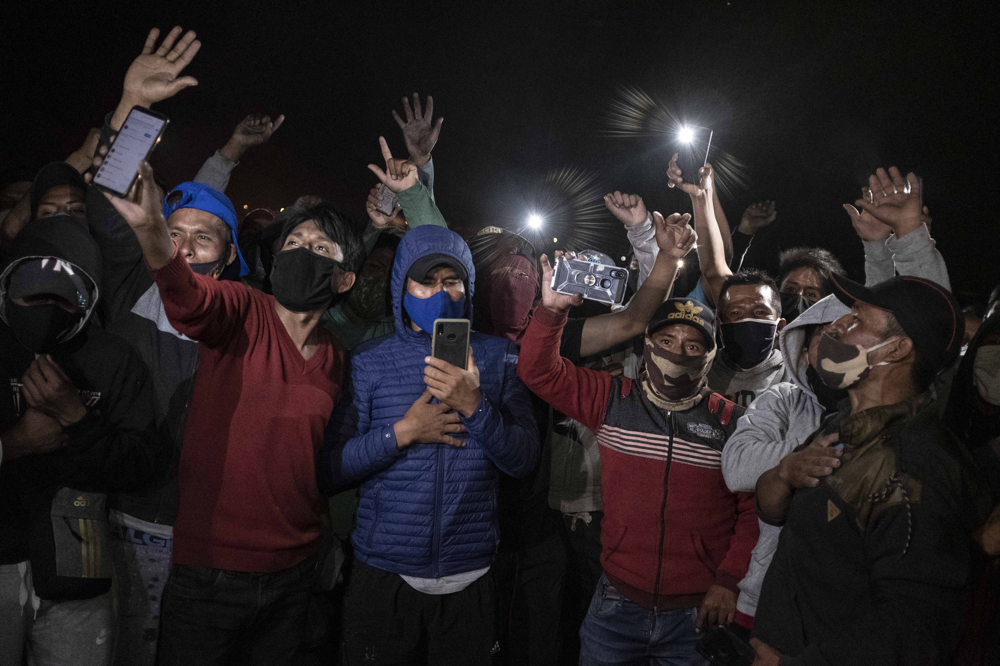

¿Cómo podemos cuidar nuestro activismo?
Entérate cómo revisando los consejos que hemos recopilado para ti
EN LAS CALLES

En contextos de protesta surgen algunos mitos alrededor de cómo puede usarse la tecnología en el espacio físico en el que nos encontramos protestando. Hemos podido identificar 5 tipos de acciones que son consideradas como amedrentamiento hacia activistas:
- 6. BLOQUEO DE SEÑAL
- 7. SUSTRACCIÓN O DAÑO DE DISPOSITIVOS
- 8. CÁMARAS EN ESPACIOS PÚBLICOS
- 9. ACECHO Y SEGUIMIENTO FÍSICO
- 10. USO DE LA FUERZA